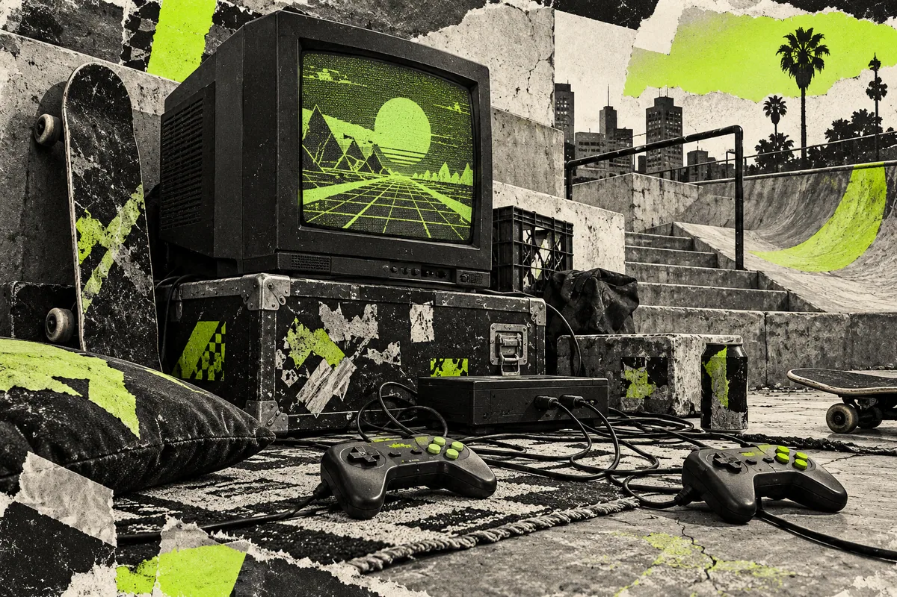
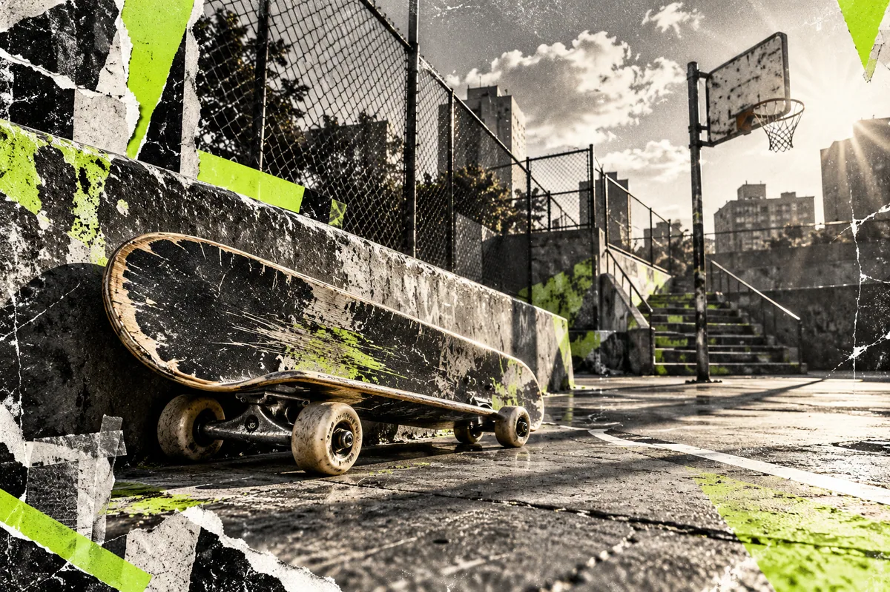
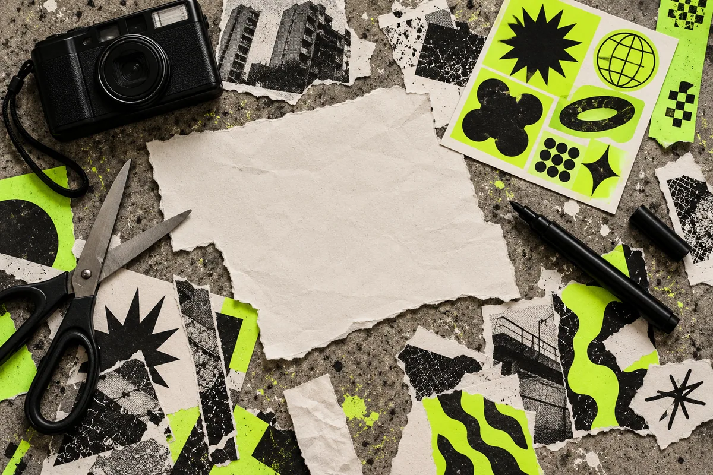

Онлайн • Идея встречиЕЩЁ
ЕЩЁ
ОДНУ?
Кооп, кастомки и случайные тиммейты. Можно без опыта, главное без токсичности.
Мне интересно ↗Выбирай, что ближе. Это концепты встреч, пока без дат и регистрации.

Кооп, кастомки и случайные тиммейты. Можно без опыта, главное без токсичности.
Мне интересно ↗
Лёгкая скейт-сессия и встреча на площадке. Без соревнований и обязательных трюков.
Я за улицу ↗
Собираем постер, короткий ролик или стикерпак. Твоя странная идея здесь к месту.
Есть идея ↗Вечер необычных инди-игр. Приноси любимую игру или просто приходи смотреть.
Хочу в лобби ↗Тем лучше. Напиши идею в заявке. Вместе решим, что из неё можно сделать.
Предложить идею ↗